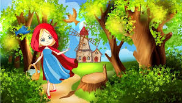
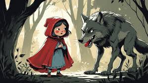
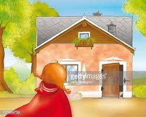

El Comienzo
Había una vez una niña que vivía cerca de un bosque frondoso. Su madre le dio una cesta con miel y pan para su abuelita.
Había una vez una niña que vivía cerca de un bosque frondoso. Su madre le dio una cesta con miel y pan para su abuelita.

Entre los pinos altos, un lobo de ojos brillantes la observaba. "Ten cuidado", susurraban las hojas, pero ella siguió su camino.

Al final del sendero estaba la pequeña cabaña. El aire olía a flores silvestres y a un peligro oculto tras la puerta.
